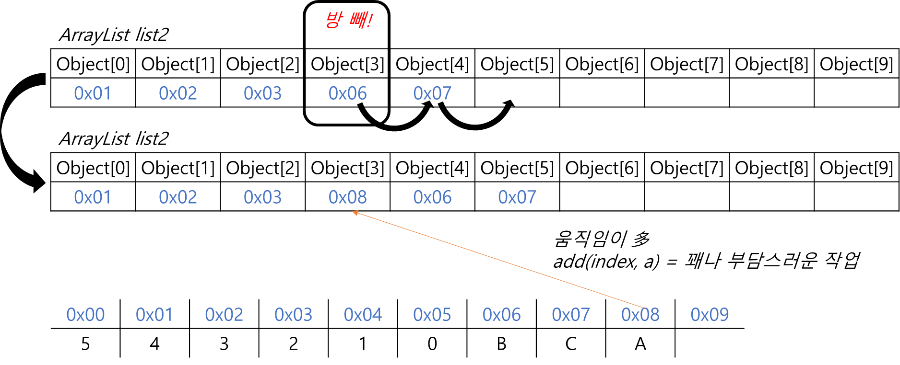

Ch11-7~11. ArrayList
0. 목차
Chapter11. 컬렉션 프레임웍
Ch11 - 7. ArrayList
Ch11 - 8. ArrayList의 메서드
Ch11 - 9. ArrayList 예제
Ch11 - 10. ArrayList에 저장 된 객체의 삭제 과정
Ch11 - 11. Java API 소스보기
Ch11 - 7. ArrayList
▶ ArrayList란?
▷ List 인터페이스를 구현
▷ 이름에 List 붙어 있는 것 → List 인터페이스 구현
▷ 저장 순서 유지, 중복 허용
▷ 객체(데이터)의 저장 공간으로 배열 사용(배열 기반)
▷ ArrayList는 기존의 Vector를 개선한 것으로 구현 원리와 기능은 동일
public class Vector extends AbstractList implements List, RandomAccess, Cloneable, java.io.Serializable {
...
protected Object[] elementDataObjects; // 객체 배열, Object[] : 모든 종류의 객체 저장 가능 → 다형성
}
▶ ArrayList vs Vector
▷ ArrayList : 동기화X
▷ Vector : 동기화O
Ch11 - 8. ArrayList의 메서드
▶ ArrayList의 메서드
▷ 생성자
▷ 추가
▷ 삭제
▷ 검색
▷ 기타
Ch11 - 9. ArrayList 예제
▶ add()
▷ capacity가 10인 ArrayList 생성
ArrayList list = new ArrayList(10);
▷ ArrayList에 5, 4, 3, 2, 1, 0 넣기
list.add(5);
list.add(4);
list.add(3);
list.add(2);
list.add(1);
list.add(0);
ArrayList:객체만 저장가능- 5, 4, 3, 2, 1, 0 :
기본형 int - 5, 4, 3, 2, 1, 0 :
autoboxing덕분에 가능 list.add(5); -autoboxing→ list.add(new Integer(5));
list [5, 4, 3, 2, 1, 0]
▶ subList()
▷ 새로운 ArrayList에 list[1] ~ list[3]에 있는 내용 담기
ArrayList list2 = new ArrayList(list.subList(1, 4));
// 두 줄로 풀어쓰면
List sub = list.subList(1, 4); // sub[4, 3, 2]는 읽기만 가능
ArrayList list2 = new ArrayList(sub); // sub[4, 3, 2]와 같은 내용의 ArrayList 생성
1, 4 : 1 ≤ 범위 < 4 : 1 ~ 3
list2 = [4, 3, 2]
▶ sort()
▷ list, list2를 오름차순으로 정렬
Collections.sort(list);
Collections.sort(list2);
- Collection ≠ Collentions
- Collection : 인터페이스 ≠ Collentions : 유틸 클래스
list [0, 1, 2, 3, 4, 5]
list2 [2, 3, 4]
▶ containsAll()
▷ list! list2의 요소가 다 들어있니?
boolean ask = list.containsAll(list2);
// console
true // 응, 다 들어있어,,
▶ add()
▷ list2에 “B”, “C” 추가
list2.add("B");
list2.add("C");
list2 [2, 3, 4, B, C]
▶ add()
▷ list2[3]에 “A” 추가
list2.add(3, "A");
list2 [2, 3, 4, A, B, C]

▶ set()
▷ list2[3]에 “A” → “AA”
list2.set(3, "AA");
list2 [2, 3, 4, AA, B, C]
▶ add()
▷ list[0]에 “1” 추가
list.add(0, "1");
list [1, 0, 1, 2, 3, 4, 5]
- 뭐가 “1”이고, 뭐가 1인지 모르겠음
▶ indexOf()
▷ list에 “1”이 어디에 들어있니?
int indexOfAsk = list.indexOf("1");
"1" = list[0]
▷ list에 1은 어디에 들어있니?
int indexOfAsk = list.indexOf(1);
1 = list[2]
▶ remove()
▷ list[0]에 “1” 삭제
list.remove(0);
list [0, 1, 2, 3, 4, 5]
▷ list에 1 삭제
list.remove(new Integer(1));
list [0, 2, 3, 4, 5]
▷ remove(1) vs remove(new Integer(1))
list.remove(1);
list.remove(new Integer(1));
▶ retainAll()
▷ list에서 list2와 겹치는 부분 외 모두 삭제
list.retainAll(list2);
list [0, 1, 2, 3, 4, 5] -retainAll→ list2 [2, 3, 4, AA, B, C]
list [2, 3, 4]
▶ size(), contains(), remove()
▷ list에서 list2와 겹치는 부분 삭제
for (int i = list.size() - 1; i >= 0; i--) {
System.out.print("list2 " + list2 + " → " + list.get(i) + "?");
if (list2.contains(list.get(i))) {
int find2 = list2.indexOf(list.get(i));
list2.set(find2, "☆" + list.get(i));
System.out.println(" → " + list2);
list2.set(find2, list.get(i));
int find = list.indexOf(list.get(i));
Object j = list.get(i);
list.set(find, "★" + list.get(i));
System.out.print("list " + list + "-remove-" + j + "→ ");
list.remove(i);
System.out.print(list);
} else System.out.print(" → not_found");
System.out.printf("\n\n");
}
System.out.println("∴ list " + list);
// console
list2 [2, 3, 4, AA, B, C] → 5? → not_found
list2 [2, 3, 4, AA, B, C] → 4? → [2, 3, ☆4, AA, B, C]
list [0, 1, 2, 3, ★4, 5]-remove-4→ [0, 1, 2, 3, 5]
list2 [2, 3, 4, AA, B, C] → 3? → [2, ☆3, 4, AA, B, C]
list [0, 1, 2, ★3, 5]-remove-3→ [0, 1, 2, 5]
list2 [2, 3, 4, AA, B, C] → 2? → [☆2, 3, 4, AA, B, C]
list [0, 1, ★2, 5]-remove-2→ [0, 1, 5]
list2 [2, 3, 4, AA, B, C] → 1? → not_found
list2 [2, 3, 4, AA, B, C] → 0? → not_found
∴ list [0, 1, 5]
Ch11 - 10. ArrayList에 저장 된 객체의 삭제 과정
▶ ArrayList에 저장 된 data[2]를 삭제하는 과정
▷ 삭제 호출
list.remove(2);
▷ 삭제 할 데이터의 next data를 한 칸씩 위로 복사
▷ 마지막 데이터를 삭제하는 경우, 복사 필요 없음
System.arraycopy(data, 3, data, 2, 2);data[3]에서 data[2]로 2개의 데이터 복사
▷ 삭제 할 데이터를 next data를 복사 해 덮어쓰기
▷ 데이터가 모두 한 칸씩 이동(덮어쓰기 완료)
▷ 마지막 데이터(중복)는 null
data[size - 1] = null;
size - 1 : 마지막 데이터
▷ 데이터가 삭제되어 데이터의 개수가 줄어듦 : size 감소
size--;
▶ ArrayList에 저장 된 첫 번째 객체 부터 삭제하는 경우
▷ 배열 복사 발생
▷ 복사된 게 남아서 완전히 삭제 안 됨
for (int i = 0; i < list.size(); i++)
list.remoeve(i);
▶ ArrayList에 저장 된 마지막 객체 부터 삭제하는 경우
▷ 배열 복사 발생X
▷ 완전히 삭제 됨
for (int i = list.size - 1; i >= 0; i--)
list.remoeve(i);